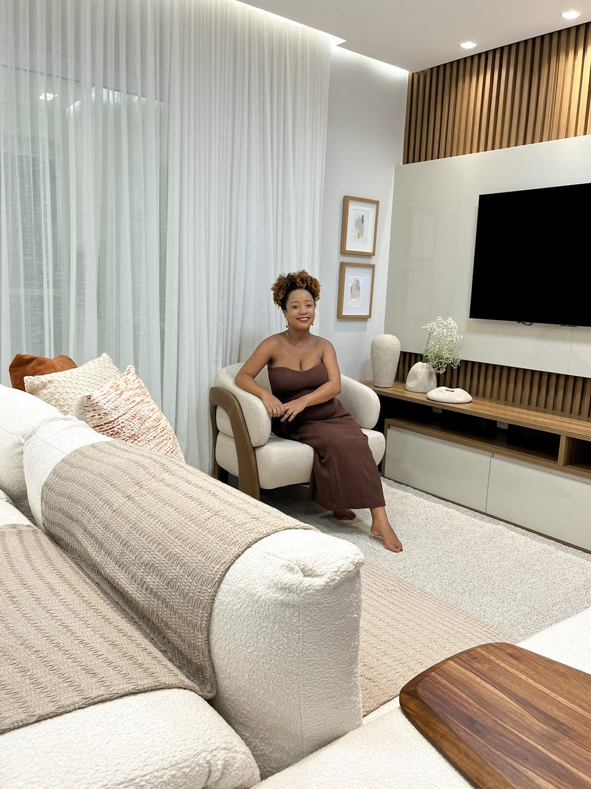

Início · Consultoria e reforma
Consultoria e reforma: por onde começar.
“Hoje além de exercer na área com reformas e consultoria, é colunista da Revestindo a Casa.” A Neri Interiores trabalha com consultoria e projetos — e cada formato é definido em conversa.
Formatos
Consultoria ou projeto?
Consultoria
Orientação pontual: escolha de cores, revestimentos, móveis, disposição e decoração, para você executar.
Projeto
O espaço todo pensado e detalhado — layout, marcenaria, materiais, iluminação decorativa — para orçar e executar.
O LinkedIn da Neri Interiores resume: “Consultoria e Projetos”. Qual formato faz sentido depende do tamanho da mudança e de quanto você quer fazer por conta própria.
Preparo
O que levar à primeira conversa
- Fotos e vídeos do espaço como está hoje.
- Medidas ou a planta do imóvel, se tiver.
- Imagens que você guardou — e o que gosta nelas.
- Móveis e objetos que quer manter.
- Como você usa a casa (ou o negócio) no dia a dia.
- O investimento que imagina e o prazo que gostaria.

Acompanhamento
Na reforma
Na reforma, o projeto de interiores orienta o que será feito: revestimentos, marcenaria, pintura, iluminação e mobiliário. Quando combinado, o acompanhamento ajuda a obra a seguir o que foi desenhado.
- Projeto aprovadoVocê revisa e aprova o que será executado.
- OrçamentosFornecedores e prestadores orçam a partir do detalhamento.
- ExecuçãoA obra segue o projeto, com visitas quando combinado.
- MontagemMóveis, iluminação e decoração dão o acabamento final.
Informação geral
Cuidados com a obra
- Estrutura e instalações: mexer em paredes estruturais, lajes, gás ou na parte elétrica e hidráulica pede um profissional habilitado, com a responsabilidade técnica registrada.
- Condomínio: em apartamento, informe a obra ao condomínio e siga as regras de horário e de entulho.
- Prefeitura: algumas obras pedem licença; confirme antes de começar.
- Contratos: combine por escrito o escopo e as etapas com cada prestador.
O que o seu projeto precisa — e quem mais entra na obra — é definido no início.
Sem complicar
Investimento
“Projetar espaços reais e possíveis a serem executados”Reel da Marcela no Instagram
O investimento depende do tamanho do espaço, do formato (consultoria ou projeto) e do acompanhamento. Os valores são combinados em conversa, a partir do que você quer fazer.
Dúvidas frequentes
Perguntas comuns
A consultoria pode virar projeto depois?
Pode fazer sentido começar pequeno e ampliar. Converse sobre isso no início.
Ela indica fornecedores?
Pergunte pelo WhatsApp. Uma das avaliações no Google é de um parceiro, a Imaginarte Estofados.
O projeto já inclui a obra?
Projeto e obra são coisas diferentes: o projeto orienta a execução, que é contratada à parte.
Vamos conversar
Cada projeto começa numa conversa.
Salvador e região, com hora marcada. Conte pelo WhatsApp o que você quer transformar — a Marcela responde para combinar.